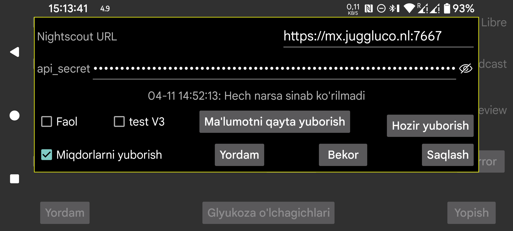

ar be de es fr nl pl ru sv tr uk uz zh en
Ko‘p hollarda Juggluco ichidagi Veb server yoki juggluco-server dan ham foydalanish mumkin. Faqat Nightscout veb sahifasini ko‘rsatish bilangina cheklanadigan ayrim ilovalar uchun cgm-remote-monitor kerak bo‘ladi.
AAPS va AAPSClient’ni ham Juggluco 7.4.1 dagi veb server bilan ishlatish mumkin.
Barcha oqim qiymatlari kelgan zahoti Nightscout serveriga yuklanadi. Agar bir vaqtning o‘zida bir nechta sensor ishlatilsa, barcha sensorlarning barcha qiymatlari yuboriladi. Ayrim Garmin soat ilovalari va widget’lari qiymatlar 5 daqiqalik oraliqda keladi deb hisoblaydi. Agar ularga 1 daqiqalik qiymatlar yuborilsa, ular egri chiziqning faqat oxirgi beshdan bir qismini ko‘rsatishi mumkin. Shu sababli Juggluco ichidagi veb server qiymatlarni odatda 5 daqiqalik oraliq bilan taqdim etadi, faqat interval=secs bundan kichik qiymatga qo‘yilgan bo‘lmasa.
URL: manzil https://hostname:port ko‘rinishida bo‘lishi kerak, masalan https://myname.herokuapp.com:6789.
Faol: yuklovchini yoqadi.
test V3: Juggluco Nightscout’ga yuklash uchun api/v3 dan foydalanadi. Ilgari V1 yuklamalarini olgan Nightscout serveriga V3 yuklamalarini yubormang va aksincha. api_secret o‘rniga bu yerda treatments va entries yuklash huquqiga ega Access Token ko‘rsatilishi kerak. Uni Nightscout veb interfeysida Admin Tools bo‘limida yaratish mumkin. “test” deb atalishi sababi — boshqa V3 yuklovchilar deyarli yo‘q; odatda V1 ishlatiladi.
Miqdorlarni yuborish: Nightscout’ga miqdorlarni ham treatments sifatida yuboradi. Belgilash qutisini bosganda, har bir yorliq Nightscout’da nimani anglatishini ko‘rsatadigan dialog ochiladi. Bu sozlamalar Juggluco veb serveri bilan ham umumiy ishlatiladi (Chap menyu→Sozlamalar→Ma’lumot almashish→Veb server). Faqat barcha yorliqlar ko‘rib chiqilgandan keyin Miqdorlarni yuborish ni yoqish mumkin. Keyinchalik yangi yorliq qo‘shsangiz, unga nima qilish kerakligini o‘zingiz ko‘rsatishingiz kerak bo‘ladi.
Nightscout’dagi bir xato sababli eski vaqt oralig‘iga qo‘shilgan yoki o‘chirilgan yozuvlar faqat yangi vaqtli element qo‘shilgandan keyin ko‘rinadi. Shu sababli Nightscout’ga juda tez-tez yubormaslik ma’qul. Hozir yuborish foydalanuvchi Juggluco’dan chiqib boshqa ilovaga o‘tganda yoki ekran o‘chirilganda amalga oshiriladi.
Ma’lumotni qayta yuborish: barcha ma’lumotni Nightscout serveriga qayta yuklaydi.
Hozir yuborish: odatda ma’lumot sensor yoki mirror ulanishidan kelishi bilan darhol yuboriladi. Agar biror sababga ko‘ra oldingi urinish muvaffaqiyatsiz bo‘lgan bo‘lsa, shu tugmani bosib qayta yuboring.
Juggluco’ning Wear OS versiyasi 4.15.0 va undan yuqori versiyalarda glyukoza qiymatlarini Nightscout’ga yuklashi mumkin. Biroq deyarli barcha hollarda buni telefon yoki planshetdagi Juggluco orqali, yoki kompyuterdagi Juggluco server orqali qilish yaxshiroq. Bu ayniqsa server bilan aloqa bo‘lmasa batareyani tez sarflaydi, shuning uchun ishonchli ulanish bo‘lmasa Faol ni o‘chirib qo‘ygan ma’qul.
Ko‘p tushunmovchilik tug‘diradigan ikki xato xabari bor.
Agar xabarda upload failure: dan keyin hech narsa bo‘lmasa, mumkin bo‘lgan sabablar:
Agar xabar quyidagicha bo‘lsa:
upload failure: java.io.FileNotFoundException: NIGHTSCOUTURL/api/v1/entries
Bu yerda NIGHTSCOUTURL — “Nightscout URL” maydoniga kiritilgan server manzili.
Bunga odatda quyidagilardan biri sabab bo‘ladi:
api_secret noto‘g‘ri;NIGHTSCOUTURL ichida bo‘lmasligi kerak bo‘lgan qo‘shimcha yo‘l bor. Masalan Nightscout URL https://ahost.org:8887 bo‘lsa, siz esa https://ahost.org:8887/extra deb kiritgansiz.